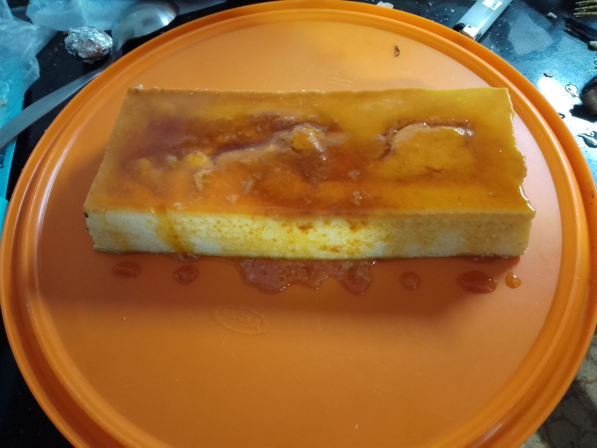

Flan de Huevo

Ingredientes
- 1 lt de leche
- 600 ml de huevos
- Media taza de azucar (para la mezcla)
- Media taza de azucar (para el caramelo)
- 4 gotas de esencia de vainilla
Pasos
- Volcar el azucar en una sartén a fuego mínimo hasta que se torne en caramelo rubio
- En un bowl, mezclar todos los ingredientes con batidora
- Volcar el caramelo rubio en un molde para flan, cubriendo en fondo y sus parede
- Volcar la mezcla en el molde cubierto de caramelo
- Colocar el molde en el horno a fuego lento por 60 minutos
- Sacar del horno y dejar enfriar
- Una vez frío, volcar sobre una bandeja que pueda retener el almíbar
- Servir en una compotera con una cucharada de dulce de leche o crema (opcional)